Selecting the Networks option from the SCFG will produce a list of available network technologies. 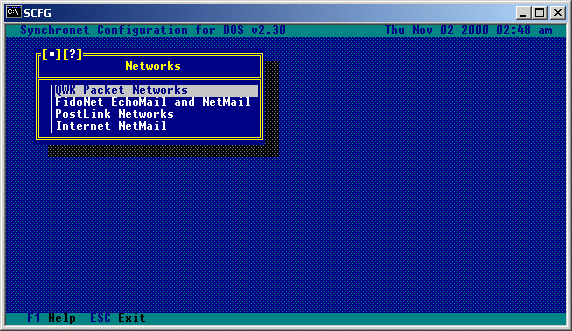 Select the network technology of your interest and refer to the following section that pertains to your selected network technology.
Let's start with some basic definitions. A QWK netted BBS is either a node, a hub, or both. A node is a BBS that calls another QWK net hub to transfer packets (receiving QWK and sending REP). A hub is a system that receives calls from other nodes and transfers packets (sending QWK and receiving REP). There are two options from the QWK Packet Networks menu, Network Hubs and Default Tagline. Selecting the Default Tagline will allow you to create or edit the tagline that will be used for messages that are sent out on the network from your QWK netted sub-boards. Individual sub-boards can have a different tagline to override this one, or use no tagline at all. Ctrl-A codes can be used in taglines so that other Synchronet systems will see the tagline in your preferred color scheme. The beginning of the tagline is not configurable. It consists of a tear line and the Synchronet product name: --- � Synchronet � The configured tagline text will be attached to the end of the above tagline.
Selecting this option produces a list of configured hubs that your system calls to upload REP packets to and download QWK packets from. If a system calls your system for messages, it is a node and your system is the hub and you should not have that system listed as a hub. If you do not call any systems for networked messages, then your system is a hub and the only configuration you need to do is set your taglines and the network options for each of your netted sub-boards. Use INS to add hubs and DEL to delete hubs from this hub list.
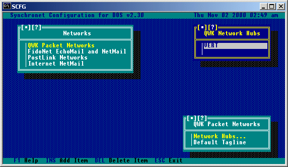
Selecting a hub from the list of available hubs will produce a sub-menu:
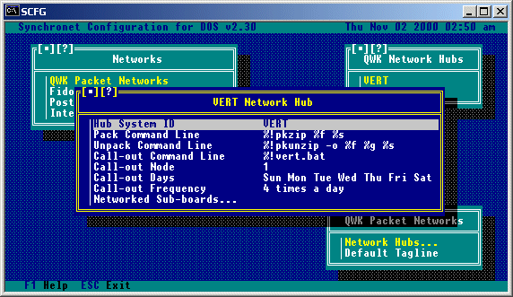
Hub System ID:
This is the QWK system ID of the hub BBS.
Pack Command Line:
This is the command line to execute to pack messages.
Unpack Command Line:
This is the command line to execute to unpack messages.
Call-out Command Line:
This is the command line to execute to perform the call-out.
Call-out Node:
This is the number of the node which should perform the call-out.
Call-out Days:
These are the days to perform the call-out.
Call-out Time/Frequency:
This is either the specific time to call-out, or the number of times
per day to call-out.
Selecting this option will give a sub-menu containing a list of networked sub-boards that will look something like this:
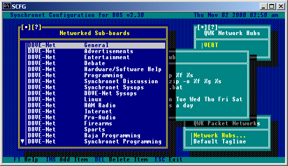
For each sub-board the following options are available:
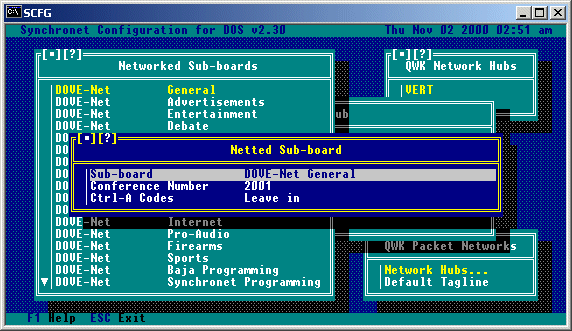
Sub-board:
Which sub-board is to be networked (Group and Sub-board name).
Conference Number:
This is the conference number of the sub-board on the HUB system.
If the hub is a Synchronet version 2 BBS and the sub-board is the
second sub-board in the first group, the conference number is 1002; if
the sub-board is the first sub-board in the third group, the conference
number is 3001, etc. The conference numbering scheme for BBS programs
other than Synchronet is usually just 1, 2, 3, etc.
Ctrl-A Codes:
This option allows you to determine how to handle Ctrl-A codes in
messages. If the hub is a Synchronet BBS, you will want to set this
to "Leave in". If the hub is not a Synchronet BBS, you will almost
always want to set this to "Strip out". If the hub is not a Synchronet
BBS, but allows ANSI escape sequences in messages, set this option
to "Expand to ANSI".
In the SCFG program, you'll need to specify your system's tagline (usually the system name and phone number), the hubs to call, when to call, what node will do the calling, and which sub-boards to carry for each hub (a sub-board can send and receive messages from more than one hub!). The hub's System ID is important and must match the System ID of the hub BBS. For each hub, you can specify a list of sub-boards to network. For each sub-board, you must also set the conference number for the sub-board on the hub BBS. In Synchronet, conference numbers are based on the Group/Sub-board relationship. Group 1 / Sub 1 is conference number 1001, Group 2 / Sub 3 is conference 2003, etc. (Note: this is NOT the conference number for the sub-board on your BBS. It is the conference number on the hub BBS.) Also, for each sub-board you must set the method of Ctrl-A code handling. If the hub system is a Synchronet BBS, you'll want to leave Ctrl-A codes in. If it is not, you'll probably want to strip them. You'll need to decide which node will do the calling-out and configure it so. You'll also need to decide if you want your BBS to call-out multiple times per day at any given time based on a total number of calls per day (usually, if all your hubs are local) or if you wish the BBS to call-out at a specific time every day (usually if one or more hubs are long distance). You also need to set the command line to execute to perform the call-out. If your hub is a Synchronet BBS, use the included QNET module (*QNET), otherwise you probably use a batch file to execute a scripted terminal program. Example scripts for Telix, Robocomm, and Qmodem are included in the EXEC directory (SBBSQNET.*).
Being a QWK network hub, just means that other QWK network compatible systems are going to logon to your system and upload and download messages. All you have to do is create a user account for each QWK network node that is going to call your system. The user name/alias should be the QWK system ID of the node BBS. The account needs to have the 'Q' restriction. The 'Q' restriction is used only for QWK network node accounts. An account with this restriction will receive the QWK: prompt immediately upon logon and can't access any other facility of the BBS. This restriction also allows that account to send messages that are from other users as well as receive private posts that are to other users. In addition to the 'Q' restriction, the 'L' (logons per day) and 'T' (time per day) exemptions may be helpful, depending on how many times the node will call your system a day and the time per call/day and logons per day allowed by the level you've given the account. Be sure to give all node accounts sufficient access to read and write messages on the sub-boards networked between the node and your BBS.
Synchronet allows the transferring of files between a QWK network node and hub with great simplicity. If you wish to send a file to a QWK network hub (your system calls directly) or QWK network node (their system calls yours directly), create a DOS subdirectory of DATA\QNET\QWKID.OUT, where QWKID is the QWK ID of the system to which you are sending the file. Copy any files you wish to send to this system into this directory. The next time the systems network with each other, the files will be sent. If your system is a QWK network node, you may request a file from your hub by posting a private message to SBBS on any of the networked sub-boards you get from your hub. The title of the message must contain "FREQ FILENAME.EXT" where FILENAME.EXT is the filename and extension of the file to download. When files are received through a QWK network, the sysop is notified of the received file upon next logon. The file will be automatically placed in the subdirectory DATA\QNET\QWKID.IN, where QWKID is the QWK ID of the system that sent the file. The transferring of files can be made automated for other programs to share data over the network. One popular use for this is Online Games that support inter-BBS play. One such game is Barren Realms Elite (BRE), see the external programs section for more information on this.
PostLink is a message networking program written by Kip Compton and available for purchase from Bonnie Anthony (see Contacts Appendix). It is a derivation from PCRelay software. RelayNet (AKA RIME), headed by Bonnie Anthony, ILink and a few other networks use this technology. Selecting this option from the networks menu will bring up the following sub-menu:
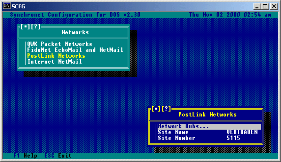 Site Name: This is the site name to be used for your BBS. Site Number: This is the site number which is assigned to you by the network coordinator. Selecting Network Hubs from this menu will display a list of available hubs. Hubs can be added and/or removed from this menu.
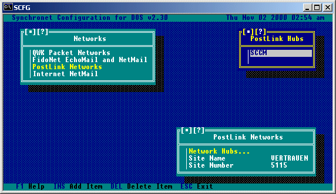 Selecting one of the available network hubs from this list will allow you to configure the call-out information for that hub.
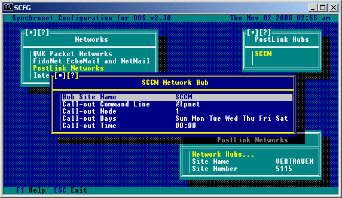 Hub Site Name: This is the name of your network hub. Call-out Command Line: This is the command line which will be executed to perform the call-out for this hub. Call-out Node: This is the number of the node which will perform the call-out for this hub. Call-out Days: This allows you to select the days on which call-outs to this hub will occur. Call-out Time: This allows you to select the time when call-outs to this hub will occur. Synchronet supports PostLink by letting the sysop configure the call-out schedule and which node will perform the call-out. Multiple PostLink networks are supported simultaneously by specifying multiple hubs. The Site ID entered in SCFG is only used for documentary purposes. Synchronet includes a UTI (Universal Text Interface) driver for PostLink. It is a set of 6 programs (UTI*.EXE) included in your EXEC directory. See the Utility Reference for more information on the Synchronet UTI Driver. Be sure to set the "PostLink Networked" Network Option to 'Yes' for each of your PostLink networked sub-boards.
FidoNet is both a network technology (referred to as FTN) and an actual message network. The technology was developed specifically for FidoNet, but is used by many other networks today as well. These non-FidoNet networks are referred to as FTNs (FidoNet Technology Networks) because they share the same technology, but don't necessarily have anything more in common with FidoNet. Setting up a FidoNet is likely the most complex task a sysop could attempt. There are many steps associated with joining a FidoNet and most of the steps involve new terminology to even the most experienced sysop. The first step is to find a FidoNet Front-end mailer program. This program will need to be run to make and accept FidoNet mail calls. It is usually run 24 hours a day, but is usually only required during a certain period (called Mail Hour and defined by the individual networks). The most popular of these programs are FrontDoor, D'bridge, InterMail, and Binkley. Both FrontDoor and Binkley will require the use of a FOSSIL (serial communications) driver as well. The most popular FOSSIL drivers are BNU and X00 (many DOORs require FOSSIL drivers as well). When running Synchronet from the Front-end, you will need to pass the current connect rate, tell Synchronet to quit after the call, and possibly pass the minutes till the next event. Example: SBBS Q C14400 E60 The above command line tells Synchronet that someone is currently connected (at 14400bps), to quit back to DOS after the caller logs off, and that the next scheduled event is in 60 minutes. See Appendix B for all the available switches for running Synchronet. SBBSecho is an included Synchronet utility (registered separately) to import/export NetMail and EchoMail bundles/packets. NetMail will be exported to and imported from the directory specified in the Networks configuration in SCFG. EchoMail will be imported to and exported from the EchoMail path specified for that sub-board, or off the base EchoMail directory specified in SCFG Network options in a subdirectory named after the internal code of the sub-board.
One of the most difficult tasks that the novice sysop will encounter is the
setting up of FidoNet. These instructions will take you step by step through
the process of setting up FidoNet on your BBS. Be warned that these steps are
very basic, just enough to get FidoNet up and running on your system, but it
may still be necessary for you to refer to the documentation which accompanies
the programs referred to in these steps. For any advanced operations you will
definitely need to refer to the documentation of programs referred to in these
steps. If you know of anyone who is already on FidoNet that is willing to help
you out, by all means ask them for their help!
NOTE that while it doesn't cost anything to have a node number (for sending
and receiving netmail) or to receive local conferences, there is usually a
nominal fee (called "cost recovery") to receive conferences from the FidoNet
backbone or files from the FidoNet filebone.
1) First of all you will need to obtain a copy of FidoNet's Policy 4 document
(the filename is usually POLICY4.ZIP or POLICY4.TXT), a recent nodelist
(usually named NODELIST.???), AND a front-end mailer program. All three of
these can normally be downloaded from any local BBS which carries FidoNet
(if not, an e-mail to the sysop of a FidoNet BBS can usually point you in
the right direction). There are several front-end mailers available such
as FrontDoor, InterMail, D'Bridge, SEAdog, Dutchie, BinkleyTerm, and Portal
of Power to name a few (the latter two are referred to as "FLO-Style"
mailers and the others are referred to as "Attach-Style" mailers). Most
front-end mailers offer a limited evaluation version which you can try out
before you decide to purchase the program.
2) Read the Policy 4 document, it will give you information about FidoNet as
well as some specifics on how to obtain a node number for your system.
3) If you do not plan to run InterMail (or FrontDoor which is very similar)
you must set up the front-end mailer you plan to use by following the
directions which accompany the program and then skip to step number 9.
The documentation will also tell you how to "compile" the nodelist file
you've downloaded so that your front-end mailer can use it. Use the
temporary address specified in Policy 4 when specifying your node address
in the front-end mailer.
Setting up InterMail v2.xx or FrontDoor v2.xx
4) Install InterMail per IM.DOC (included with InterMail).
a) If using FrontDoor, follow the FD.DOC file and substitute the letters FD
where ever you see an IM in this section.
5) Copy the MAILER.BAT included with SBBSecho and the EXEBBS.BAT from the
Synchronet DOCS directory into the InterMail directory (C:\IM).
6) Change into the InterMail directory, run IMSETUP, and perform the
following:
a) Under Global->Address->Main, enter your FidoNet address (or the
temporary address specified in Policy 4 until such time as you have
received your own address).
b) Under Global->Filenames, verify that the paths are set similar to the
following:
ษออออออออออออออออออออออออออออออออออออออออออออออออออออออ Filenames and paths ป
บ บ
บ System C:\IM\SYSTEM\ (or C:\FD\ for FrontDoor) บ
บ Netmail C:\IM\MAIL\ บ
บ Files C:\IM\INBOUND\ บ
บ Sec Files C:\IM\INBOUND\ บ
บ*Packets C:\IM\PACKETS\ บ
บ*Log file C:\IM\IM.LOG บ
บ Banner บ
บ Nodelist C:\IM\NODELIST\ บ
บ In-event บ
บ Hudsonfmt บ
บ Wildcat! บ
บ Swapping C:\IM\ บ
บ Semaphore C:\IM\ บ
บ บ
บ * = Must be unique for each Mail Server บ
ศอออออออออออออออออออออออออออออออออออออออออออออออออออออออออออออออออออออออออออผ
c) Under Modem->Advanced Setup->Connect Strings set ALL "BBSexit" levels
to 100. (For FrontDoor under Mailer->Errorlevels set all baud rates to
100, Received Mail to 50, and Create .BAT file to Yes).
d) Under Manager->Events, make sure all your events are set to exit when
mail is received (under Event Behavior). This allows for the immediate
importation of new messages into the BBS.
e) Under Manager->Events, add the following event:
ษอออออออออออออออออออออออออออออออออออออออออออออออออออออออออออออออออออออ Edit ป
บ Tag X บ
บ Days -------A บ
บ Modifier Ignore eventbase (*) บ
บ Start time 04:30 บ
บ Length 00:01 บ
บ Errorlevel 75 บ
บ Not used บ
บ Behavior บ
บ Use alias 1:103/705 บ
บ Retry delay 0 บ
บ Comment Synchronet exclusive event บ
บฤฤฤฤฤฤฤฤฤฤฤฤฤฤฤฤฤฤฤฤฤฤฤฤฤฤฤฤฤฤฤฤฤฤฤฤฤฤฤฤฤฤฤฤฤฤฤฤฤฤฤฤฤฤฤฤฤฤฤฤฤฤฤฤฤฤฤฤฤฤฤฤฤฤฤบ
บ Event tag A..YZ - eXternal event, errorlevel is required บ
ศอออออออออออออออออออออออออออออออออออออออออออออออออออออออออออออออออออออออออออผ
f) Under Mailer->Misc, set "Trigger exit upon receipt of netmail" and
"Upon receipt of ANY file" to Yes. This will allow for the immediate
importation of NetMail and any File Distribution Echoes you may carry.
g) Under Modem->Hardware, set "Lower DTR when busy" to "No".
h) Under Modem->Command strings, set the "Down" string to "ATM0H1|".
i) Exit IMSETUP.
7) Unarc the nodelist file (NODELIST.???) that you downloaded previously
into your nodelist directory.
8) Now run IMNC to compile the nodelist.
Setting up FidoNet in SCFG
9) Run SCFG from one of your node directories, or hit 'C' from the waiting for
caller screen. Then select Networks->FidoNet EchoMail and NetMail.
You'll then be brought to a menu that should be set up similar to this:
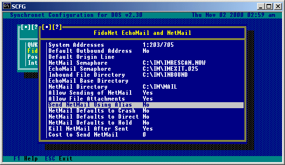 a) For FrontDoor the NetMail Semaphore file should be set to C:\FD\FDRESCAN.NOW and the EchoMail Semaphore file should be set to C:\FD\FDEXIT.025. b) For FrontDoor version 2.11, the EchoMail Semaphore file should be set to C:\FD\FDXIT.025. c) For FrontDoor version 2.20 (commercial, multinode), the EchoMail Semaphore file should be set to C:\FD\FDXIT#.025, where # is the node number (0 based). 10) Set your address to your system's FidoNet address (or the temporary address specified in Policy 4 until such time as you have received your own address). This is the address used for sending and receiving NetMail. It will also be used as the default address for message sub-boards. 11) Create an origin line for your system that most likely contains your BBS name and phone number. 12) Following is an overview of the remaining options available on this menu: a) System Addresses: This option will bring you to a sub-menu to allow you to configure different addresses (AKAs) for your system. Following is an example for a BBS configured for two fido type networks.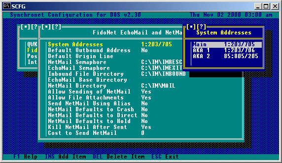b) Default Outbound Address: When a user sends netmail, this is the 'send to' address that is used as a default (useful for FidoNet<->Internet gateways). c) NetMail Semaphore: This is the name of the trigger file which will cause your front-end mailer to exit and scan for outgoing netmail. d) EchoMail Semaphore: This is the name of the trigger file which will cause your front-end mailer to exit and scan for outgoing echomail. e) Inbound File Directory: This is the name of the directory where your front-end mailer stores incoming files. f) EchoMail Base Directory: This is the base directory for your echomail subdirectories g) NetMail Directory: This is the name of the directory where your front-end mailer looks for and places netmail. h) Allow Sending of NetMail: When set to 'Yes' users can send netmail from your system. i) Allow File Attachments: When set to 'Yes' users can send netmail file attachments from your system. j) Send NetMail Using Alias: When set to 'Yes' the user alias will be used (rather than their real name) on outgoing netmail. k) NetMail Defaults to Crash: If set to 'Yes' netmail sent from your system will default to crash status (send immediately and directly). l) NetMail Defaults to Direct: If set to 'Yes' netmail sent from your system will default to direct status (send directly). m) NetMail Defaults to Hold: If set to 'Yes', netmail sent from your system will default to hold status. n) Kill NetMail After Sent: Setting this to 'Yes' will delete outgoing netmail after it has been sent. o) Cost to Send NetMail: This is the cost (in credits) that a user will be charged when sending netmail. 13) Setup SBBSecho by running the ECHOCFG program and reading the documentation for information on the available options. a) Under Paths...->Outbound Directory be sure to enter the path where outgoing mail packets and bundles should be placed (i.e.: C:\IM\OUTBOUND). b) Select the appropriate Mailer Type. c) Enter your registration number (if you are a registered owner of the SBBSecho program). 14) Once you have done this you must now run the file MAILER.BAT (if using an Attach-Style mailer) to use Synchronet with your front-end mailer. MAILER.BAT must be run from your front-end mailer's directory (e.g. C:\IM). You will no longer run the file SBBS.BAT to start this node (if you run a multi-node system, you will still use SBBS.BAT to start those nodes which are not using a front-end mailer). a) If you are NOT using InterMail as your front-end mailer, be sure to modify your MAILER.BAT file to reflect the front-end mailer that you are using. 15) Follow the instructions given in the Policy 4 document to determine who you should send netmail to in order to obtain your own node number. 16) Now, from your front end mailer, send a netmail to this person following the instructions contained in the Policy 4 document. Once you have done this and the netmail has been sent, you should patiently await a netmail reply containing your node number and the node number of your hub (where you will send/receive your echomail and netmail to/from). 17) Once you have received your node number, you'll want to replace the temporary node number you used in your front-end mailer as well as in SCFG->Networks->FidoNet Echomail and Netmail->System Addresses to it. 18) Send your hub a message with the Area Manager (for the backbone <echomail>) and Areafix (for the filebone <files>) passwords you wish to use on their systems. You will need to remember these passwords as you will be using them to do remote maintenance (such as adding and removing conferences and file areas that you wish to receive). 19) Your hub should respond with Area Manager instructions and a list of areas available for you to connect to. If not, contact your hub for more information. 20) Look through the list of areas available to you and determine which conferences you'd like to carry. In SCFG->Message Areas create a message group(s) for the conferences you'd like to carry. When setting up a sub-board for a conference, be sure to use the "Area Tag" name given in the area list as the sub-board Short Name. a) Under Network Options... for each sub-board toggle the FidoNet Echomail option toggled to YES. b) If the conference requires a different address, configure the address under Network Options... c) If you allow aliases on your system, under Toggle Options... set Use Real Names to YES. d) If you are unfamiliar with adding message groups and/or sub-boards, consult that section of the Synchronet System Operator's Manual. e) For a more complete list of conferences available on the FidoNet backbone you may wish to download the file FIDONET.NA from either your hub or a local FidoNet BBS. This file contains a list of ALL conferences carried on the backbone. 21) Once you have set up all of the conferences you'd like to carry, you'll need to go to SCFG->Message Areas-><group>->Export Areas...->AREAS.BBS (SBBSecho) to create an AREAS.BBS file for SBBSecho to use. 22) Now following the Area Manager instructions, send a message to your hub's Area Manager and turn on all of the conferences you wish to carry. Note that there are some administrative conferences for FidoNet that your users shouldn't be able to read or post on, and some that even you shouldn't post on, there is also usually a "test" conference which you may want to set up to post messages on and insure that echomail is being sent and received properly. 23) That's about all there is to it. You are now set up on FidoNet and should be able to send and receive FidoNet echomail and netmail. Examples for Receiving File Echoes via TICK (third party file echo program) Example TIC.CFG: ---------------------------------[ Begin ]------------------------------------- IN c:\fd\file ZONE 1 c:\fd\-mailout NET 2 NODE 3 HOLD c:\fd\tickhold QDIR c:\fd\tickqdir FDLog AREA j:\fido\backbone BACKBONE 1:2/1 xxxxx * AREA j:\fido\SOFTDIST SOFTDIST 1:2/1 xxxxx * ---------------------------------[ End ]------------------------------------- In MAILER.BAT, at the end of the ":inmail" block, before "goto top": ---------------------------------[ Begin ]------------------------------------- set tz=PST8EDT tick >> fd.log set tz= %sbbs%\exec\addfiles * /diz ---------------------------------[ End ]------------------------------------- Setting up ALLFIX (third party file echo program) with Synchronet BBS Software In ASETUP->System data->Global Options: ีออออออออออออออออออออออออออออออออออออออออออออออออออออออออออออ Global options ธ ณ ณ ณ Keep original file date Yes Replace extension No ณ ณ Mailer rescan FrontDoor Max age of requests 0 ณ ณ Log style FrontDoor Keep exported messages No ณ ณ Mailer mode FrontDoor Days to keep on hold 30 ณ ณ Download counters Size of stat file 0 ณ ณ Update DESCRIPT.ION No Max TIC archive size 0 ณ ณ Date format mm-dd-yy Max size to pack 0 ณ ณ Min HD space to import 1024 UTC offset -8 ณ ณ Process local requests No Max Msg size 0 ณ ณ MSG compatibility Fido ณ ณ Dupe checking Filename ณ ณ ณ ณฤฤฤฤฤฤฤฤฤฤฤฤฤฤฤฤฤฤฤฤฤฤฤฤฤฤฤฤฤฤฤฤฤฤฤฤฤฤฤฤฤฤฤฤฤฤฤฤฤฤฤฤฤฤฤฤฤฤฤฤฤฤฤฤฤฤฤฤฤฤฤฤฤฤฤฤณ ณ ณ ณ LongDesc character One line LongDesc No ณ ณ Filter LongDesc No Max len of LongDesc 0 ณ ณ Spaces to indent 1 Add tag to desc No ณ ณ ณ ิออออออออออออออออออออออออออออออออออออออออออออออออออออออออออออออออออออออออออออพ Edit your MAILER.BAT: Search for "set sbbs=" Add "set allfix=c:\allfix" Search for ":inmail" Add "%allfix%\allfix file mgr" Add "%sbbs%\exec\addfiles * /diz" Search for ":outmail" Add "%allfix%\allfix file"[9.5.2] - Sending FidoNet NetMail
Once you have a FidoNet address and have your Front-end mailer functioning properly, you may send NetMail messages and allow, if you wish, your users to send NetMail. You can set a NetMail cost in credits for users in SCFG-> Networks->FidoNet EchoMail and NetMail->NetMail Cost. Sysops and users with the 'S' exemption will not be charged credits when sending NetMail. Users with the 'M' restriction are not allowed to send NetMail. Users will not be allowed to send NetMail at all, if the sysop has set SCFG->Networks->FidoNet EchoMail and NetMail->Allow Sending of NetMail to No. Users can optionally set a NetMail forwarding address for their account using the "Account Defaults" menu. If the user has a NetMail address specified, any E-mail set to that account will be automatically forwarded to the NetMail address if the sending user wishes. This is useful for users who can receive FidoNet NetMail on a "home" BBS system and prefer to receive their E-mail there instead of on this particular system. Sysops and users with the 'F' exemption can also perform other special functions with NetMail. If NetMail Defaults to Crash status is OFF, sysops and 'F' exempted users can override this by starting their NetMail title with "CR:" setting the Crash status ON for that NetMail message. Sysops and 'F' exempted users may also send File Requests by starting the title with "FR:" and then the filename(s) being requested follow on the title. If multiple filenames are requested, they must be separated by a space. Example: "FR: FILE1.EXT FILE2.EXT". Sysops and 'F' exempted users may also send File Attachments from anywhere on the system (potentially dangerous) by starting the title with "FA:" and then the filename(s) to attach to the netmail message. This allows the sysop to send a file attachment to multiple users without creating multiple copies of the attachment or requiring the attachment to be copied into the Synchronet DATA\FILE\xxxx.OUT directory of the sending user. Since the sending user (sysop or 'F' exempt) can attach ANY file on the system, the 'F' exemption and sysop security level (90+) should given out with extreme caution. Sysops and 'F' exempted users can also request a return receipt by starting the title with "RR:". "CR:", "FR:", "RR:", and "FA:" may be used in combination with one another, but must be specified in that order. Example: "CR: RR: This is my title". The "xx:" specifiers and an optional trailing space are eliminated from the final title for the NetMail message. Example: "CR:Hello" or "CR: Hello" Becomes: "Hello" before it is sent out by Synchronet.
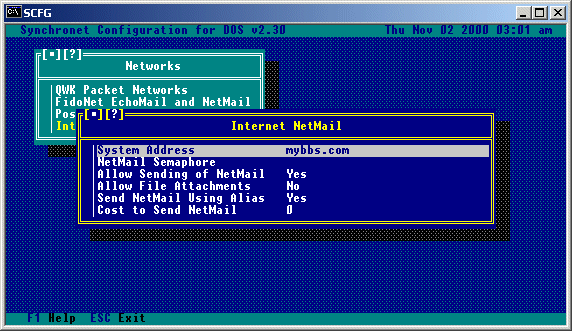 System Address: This is the Internet address for your BBS. NetMail Semaphore: This is the name of the trigger file which will cause your Internet mail program to exit and scan for outgoing netmail. Allow Sending of NetMail: When set to 'Yes' users can send Internet netmail from your system. Allow File Attachments: When set to 'Yes' users can attach files to the Internet netmail that they are sending. Send NetMail Using Alias: When set to 'Yes' the user alias will be used (rather than their real name) on outgoing Internet netmail. Cost to Send NetMail: This is the cost (in credits) that a user will be charged when sending Internet netmail.
(v2 Only) In order for your BBS to support Internet networking (including such things as sending/receiving Internet netmail and newsgroups, FTP, Telnet, etc.) it is required that you obtain a third party program such as NetXpress or BBSNet. It is also possible (but not recommended) to use a Fido->Internet or a QWK->Internet gateway (usually available as shareware software).
Copyright ฉ 2000 by Rob Swindell
Synchronet BBS Software (Synchronet)
Version 3 is comprised of several documentation,
library, executable, and source code
files, all of which are covered by the
GNU General Public License with the exception of the following portions
covered by
the GNU Lesser General Public License:
SMBLIB and XSDK.
Synchronet Version 2 (for DOS and OS/2) and its source code was released to the
Public Domain by Digital Dynamics
in 1997 and remains Public Domain software today.
Synchronet Version 3 is not Public Domain software.
Rob Swindell
PO Box 501
Yorba Linda, CA 92885
http://www.synchro.net
For the complete Copyright Information please read the Copyright Documentation .